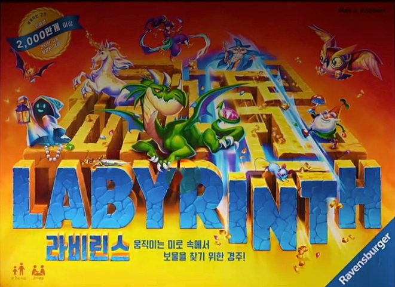
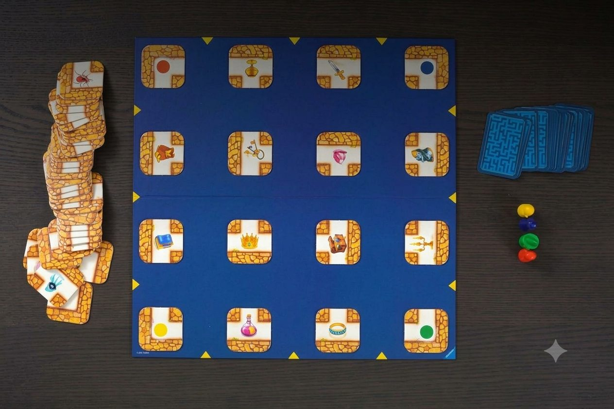
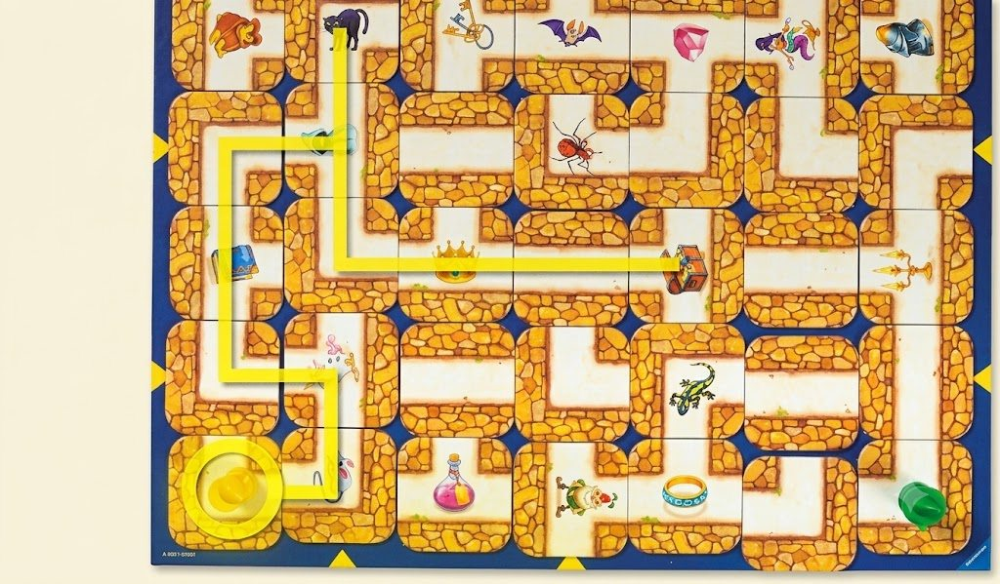
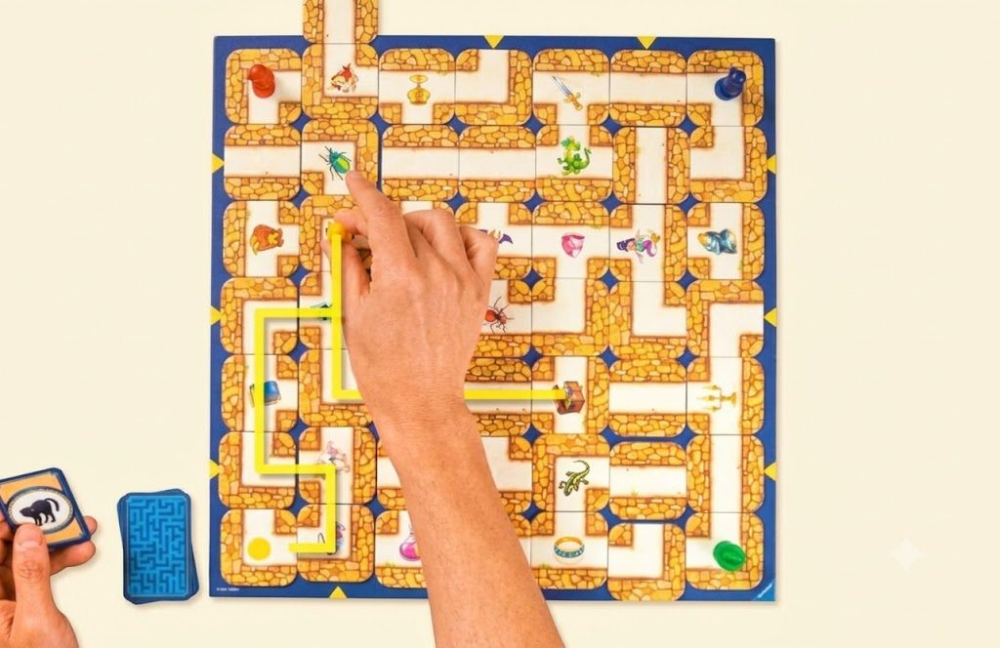

초등 교사 보드게임 연수
움직이는 미로,
라비린스
게임 소개부터 이기는 전략, 교실 활용까지

라비린스 교사 연수 · 02
01 게임 소개
끊임없이 움직이는 미로에서
보물을 찾아 탈출하는 게임
독일 라벤스부르거의 스테디셀러로, 국내에서는 코리아보드게임즈가 유통합니다.
규칙은 단순하지만, 매 차례 미로 모양이 바뀌어 생각하는 힘이 필요합니다.
라비린스 교사 연수 · 03

34장
길 타일
33장은 판 위에, 1장은 ‘남는 타일’
라비린스 교사 연수 · 04 · 사진: 코리아보드게임즈 게임 설명 영상 캡처(Gemini로 편집)
01 게임 소개 · 목표
내 보물을 모두 찾고,
출발한 모서리로
가장 먼저 돌아오면 승리!
보물 카드는 맨 위 한 장만 몰래 보고, 그 보물을 찾으면 다음 카드를 봅니다.
라비린스 교사 연수 · 05
01 게임 소개 · 준비
준비는 네 단계면 끝
1
타일 섞어
빈칸 채우기
길 타일을 섞어 판의 빈칸에 아무렇게나 놓으면 매번 새로운 미로가 됩니다.
2
남는 타일
옆에 두기
한 장 남은 타일은 판 옆에 둡니다. 차례마다 이 타일로 미로를 밉니다.
3
보물 카드
똑같이 나누기
24장을 섞어 나눠 뒷면으로 쌓아 둡니다. 4명이면 6장, 3명 8장, 2명 12장.
4
말을
모서리에 놓기
각자 말과 같은 색 모서리에서 출발합니다. 이곳이 마지막에 돌아올 집입니다.
라비린스 교사 연수 · 06
1단계 · 반드시
미로 밀기
남는 타일을 판 가장자리에 밀어 넣어 한 줄을 통째로 움직입니다.
2단계 · 원하면
말 움직이기
이어진 길을 따라 원하는 만큼 갑니다. 그대로 있어도 됩니다.
보물에 바로 갈 수 있어도 미로는 꼭 먼저 밀어야 합니다.
라비린스 교사 연수 · 07
02 규칙 · 1단계
미로 밀기: 한 줄이 통째로 움직여요
1
돌려 보기
남는 타일을 원하는 방향으로 돌립니다.
2
밀어 넣기
가장자리 노란 화살표 자리에 밀어 넣습니다.
3
새 남는 타일
반대쪽으로 빠진 타일이 다음 사람의 남는 타일이 됩니다.
라비린스 교사 연수 · 08 · 사진: 코리아보드게임즈 게임 설명 영상 캡처(Gemini로 편집)
02 규칙 · 1단계
밀기 전과 후, 그림으로 보기
줄 전체가 한 칸씩 밀려요
들어간 타일만큼 반대쪽 끝 타일 하나가 빠져나옵니다.
말이 밀려나면 반대편으로
청록색 말처럼, 방금 들어간 새 타일 위로 옮겨 놓습니다.
라비린스 교사 연수 · 09
02 규칙 · 1단계
미로 밀기, 꼭 지킬 세 가지
밀 수 있는 곳은 12군데뿐
주황 화살표 자리에서만 밀 수 있어요. 진한 고정 타일이 있는 줄은 움직이지 않습니다.
바로 되돌리기 금지
방금 타일이 빠져나온 자리에는 다음 사람이 곧바로 밀어 넣을 수 없어요.
밀려난 말은 반대편으로
말이 판 밖으로 밀려나면 반대쪽에 새로 들어온 타일 위에 놓습니다.
라비린스 교사 연수 · 10
02 규칙 · 2단계
말 움직이기: 이어진 길이면 끝까지

길이 이어져 있으면 몇 칸이든
노란 선처럼 꺾이고 돌아가도, 끊기지 않으면 한 번에 갑니다.
벽은 넘을 수 없어요
가까워 보여도 벽에 막히면 이번 차례엔 못 갑니다.
가만히 있어도 괜찮아요
못 가면 다음 차례에 유리한 자리로 옮기거나 기다립니다.
라비린스 교사 연수 · 11 · 사진: 코리아보드게임즈 게임 설명 영상 캡처(Gemini로 편집)
02 규칙 · 보물과 승리
보물을 찾으면, 다음 카드로

보물 칸에 도착
맨 위 카드의 보물 칸에 말을 멈춥니다.
카드 뒤집기
찾은 카드는 앞면으로 두고, 다음 카드를 몰래 봅니다.
집으로 귀환
카드를 다 뒤집고 출발 모서리에 먼저 돌아오면 승리!
라비린스 교사 연수 · 12 · 사진: 코리아보드게임즈 게임 설명 영상 캡처(Gemini로 편집)
03 전략
운보다 생각!
이기는 요령 네 가지
주사위가 없는 게임이라, 조금만 생각하는 방법을 알려 줘도 아이들의 플레이가 확 달라집니다.
전략 1
밀기 전에 남는 타일을 네 방향 다 돌려 보기
가운데 빈칸에 세갈래 타일이 들어온다면, 어느 방향이어야 보물까지 이어질까?
같은 타일도 방향에 따라 길이 되기도, 벽이 되기도 합니다. 밀기 전에 꼭 돌려 보세요.
라비린스 교사 연수 · 14
전략 2
줄을 밀면 말도 보물도 함께 움직여요
내 줄을 밀면 ‘공짜 이동’
걷지 않아도 말이 한 칸 옮겨집니다. 보물 쪽으로 가는 줄을 골라 보세요.
보물을 내 쪽으로 끌어오기
움직이는 타일 위 보물은 그 줄을 밀어 가까이 당겨 올 수 있어요.
“내가 갈까, 보물을 데려올까?” 두 가지를 모두 떠올려 보게 하세요.
라비린스 교사 연수 · 15
전략 3
고정 타일을 이정표로, 다음 차례를 준비
고정 타일은 절대 안 움직여요
사진 속 16칸 위의 보물은 위치가 확실합니다. 길만 만들면 돼요.
못 가면, 다음을 준비
보물 가까이, 길이 여러 갈래로 열린 칸에 서 두면 다음 차례에 유리해요.
귀환 길도 미리 생각
마지막 보물을 찾을 때쯤엔 집 모서리 쪽 길도 살펴 둡니다.
라비린스 교사 연수 · 16 · 사진: 코리아보드게임즈 게임 설명 영상 캡처(Gemini로 편집)
관찰하기
친구 말이 자꾸 향하는 쪽을 보면 어떤 보물을 노리는지 짐작할 수 있어요.
길 끊기
내게 손해가 없다면, 친구 앞의 길이 끊어지는 줄을 골라 밉니다.
되돌리기 금지 활용
내가 바꾼 줄은 다음 사람이 바로 원래대로 되돌릴 수 없어요.
교실 팁 · 방해도 게임의 일부라는 것을 시작 전에 약속해 두면 다툼이 줄어듭니다.
라비린스 교사 연수 · 17
공간 지각력
타일을 돌리고 밀며 길 모양을 머릿속에 그립니다. 수학 ‘평면도형의 이동’과 연결돼요.
계획과 문제 해결
어느 줄을 밀지, 어디로 갈지 한 수 앞을 내다보며 경로를 설계합니다.
유연한 사고
친구 차례마다 미로가 바뀌니, 세운 계획을 상황에 맞게 고쳐 나갑니다.
함께하는 태도
차례 지키기, 규칙 합의하기, 이기고 지는 것을 받아들이는 연습이 됩니다.
라비린스 교사 연수 · 18
| 이럴 때 | 이렇게 해 보세요 |
|---|
| 처음 소개할 때 | 실물화상기로 교사가 한 차례 시범. “밀고, 움직이고!”를 함께 외치기 |
| 저학년·처음 하는 반 | 보물 카드를 모두 앞면으로 펼쳐 두고, 아무 보물이나 찾게 하기 |
| 시간이 부족할 때 | 한 사람당 보물 카드를 3~4장으로 줄여 짧게 진행 |
| 대화를 늘리고 싶을 때 | 2명이 한 말을 맡는 팀전으로, 어느 줄을 밀지 의논하게 하기 |
| 되돌리기 다툼이 생길 때 | 방금 빠진 타일을 그 자리 옆에 두어, 못 미는 곳을 눈으로 확인 |
라비린스 교사 연수 · 19
마무리
규칙은 5분, 재미는 한 판 내내.
이제 함께 한 판 해 볼까요?
기억할 세 가지: 밀고 → 움직이고 · 되돌리기 금지 · 보물 다 찾으면 집으로
참고: 코리아보드게임즈 ‘라비린스’ 게임 설명 영상(유튜브), 라벤스부르거 라비린스 규칙서